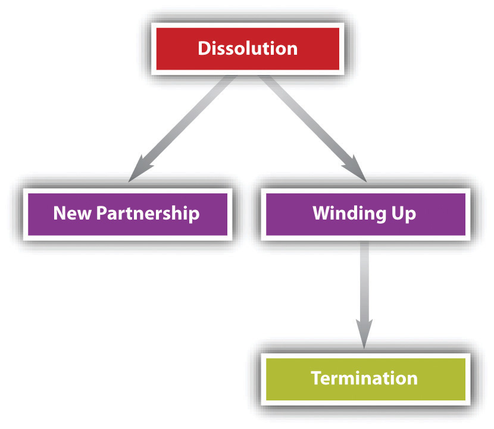
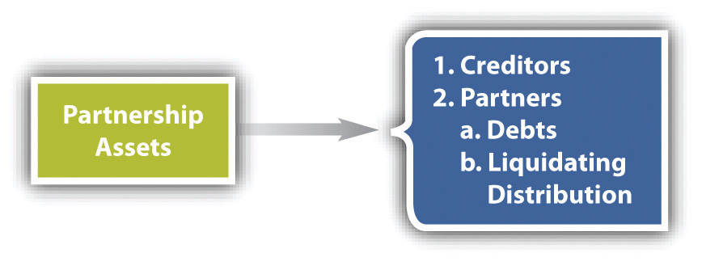

It is said that a partnership is like a marriage, and that extends to its ending too. It’s easier to get into a partnership than it is to get out of it because legal entanglements continue after a person is no longer a partner. The rules governing “getting out” of a partnership are different under the Revised Uniform Partnership Act (RUPA) than under the Uniform Partnership Act (UPA). We take up UPA first.
Dissolution, in the most general sense, means a separation into component parts.
People in business are sometimes confused about the meaning of dissolutionA legal severance or breaking up; under UPA the change in relations caused by a partner’s withdrawal from the firm.. It does not mean the termination of a business. It has a precise legal definition, given in UPA Section 29: “The dissolution of a partnership is the change in the relation of the partners caused by any partner ceasing to be associated in the carrying on as distinguished from the winding up of the business.” The partnership is not necessarily terminated on dissolution; rather, it continues until the winding up of partnership affairs is completed, and the remaining partners may choose to continue on as a new partnership if they want.UPA, Section 30. But, again, under UPA the partnership dissolves upon the withdrawal of any partner.
Partnerships can dissolve for a number of reasons.UPA, Section 31.
The term of the partnership agreement may have expired or the partnership may be at will and one of the partners desires to leave it. All the partners may decide that it is preferable to dissolve rather than to continue. One of the partners may have been expelled in accordance with a provision in the agreement. In none of these circumstances is the agreement violated, though its spirit surely might have been. Professor Samuelson calls to mind the example of William Dean Howells’s Silas Lapham, who forces his partner to sell out by offering him an ultimatum: “You may buy me out or I’ll buy you out.” The ultimatum was given at a time when the partner could not afford to buy Lapham out, so the partner had no choice.
Dissolution may also result from violation of the agreement, as when the partners decide to discharge a partner though no provision permits them to do so, or as when a partner decides to quit in violation of a term agreement. In the former case, the remaining partners are liable for damages for wrongful dissolution, and in the latter case, the withdrawing partner is liable to the remaining partners the same way.
A third reason for dissolution is the occurrence of some event, such as enactment of a statute, that makes it unlawful to continue the business. Or a partner may die or one or more partners or the entire partnership may become bankrupt. Dissolution under these circumstances is said to be by operation of law.UPA, Section 31.
Finally, dissolution may be by court order. Courts are empowered to dissolve partnerships when “on application by or for a partner” a partner is shown to be a lunatic, of unsound mind, incapable of performing his part of the agreement, “guilty of such conduct as tends to affect prejudicially the carrying on of the business,” or otherwise behaves in such a way that “it is not reasonably practicable to carry on the business in partnership with him.” A court may also order dissolution if the business can only be carried on at a loss or whenever equitable. In some circumstances, a court will order dissolution upon the application of a purchaser of a partner’s interest.UPA, Section 32.
For the most part, dissolution terminates the authority of the partners to act for the partnership. The only significant exceptions are for acts necessary to wind up partnership affairs or to complete transactions begun but not finished at the time of dissolution.UPA, Section 33. Notwithstanding the latter exception, no partner can bind the partnership if it has dissolved because it has become unlawful to carry on the business or if the partner seeking to exercise authority has become bankrupt.
After a partnership has dissolved, it can follow one of two paths. It can carry on business as a new partnership, or it can wind up the business and cease operating (see Figure 23.2 "Alternatives Following UPA Dissolution").
Figure 23.2 Alternatives Following UPA Dissolution
In order to carry on the business as a new partnership, there must be an agreement—preferably as part of the original partnership agreement but maybe only after dissolution (and maybe oral)—that upon dissolution (e.g., if a partner dies, retires, or quits) the others will regroup and carry on.
Under UPA the remaining partners have the right to carry on when (1) the dissolution was in contravention of the agreement, (2) a partner was expelled according to the partnership agreement, or (3) all partners agree to carry on.UPA, Sections 37 and 38.
Whether the former partner dies or otherwise quits the firm, the noncontinuing one or his, her, or its legal representative is entitled to an accounting and to be paid the value of the partnership interest, less damages for wrongful dissolution.UPA, Section 38. The firm may need to borrow money to pay the former partner or her estate; or, in the case of a deceased partner, the money to pay the former partner is obtained through a life insurance buyout policy.
Partnerships routinely insure the lives of the partners, who have no ownership interests in the insurance policies. The policies should bear a face amount equal to each partner’s interest in the partnership and should be adjusted as the fortunes of the partnership change. Proceeds of the insurance policy are used on death to pay the purchase price of the interest inherited by the deceased’s estate. If the insurance policy pays out more than the interest at stake, the partnership retains the difference. If the policy pays out less, the partnership agrees to pay the difference in installments.
Another set of issues arises when the partnership changes because an old partner departs and a new one joins. Suppose that Baker leaves the car dealership business and his interest is purchased by Alice, who is then admitted to the partnership. Assume that when Baker left, the business owed Mogul Parts Company $5,000 and Laid Back Upholsterers $4,000. After Baker left and Alice joined, Mogul sells another $5,000 worth of parts to the firm on credit, and Sizzling Radiator Repair, a new creditor, advances $3,000 worth of radiator repair parts. These circumstances pose four questions.
First, do creditors of the old partnership remain creditors of the new partnership? Yes.UPA, Section 41(1).
Second, does Baker, the old partner, remain liable to the creditors of the old partnership? Yes.UPA, Section 36(1). That could pose uncomfortable problems for Baker, who may have left the business because he lost interest in it and wished to put his money elsewhere. The last thing he wants is the threat of liability hanging over his head when he can no longer profit from the firm’s operations. That is all the more true if he had a falling out with his partners and does not trust them. The solution is given in UPA Section 36(2), which says that an old partner is discharged from liability if the creditors and the new partnership agree to discharge him.
Third, is Alice, the new partner, liable to creditors of the old partnership? Yes, but only to the extent of her capital contribution.UPA, Section 17.
Fourth, is Baker, the old partner, liable for debts incurred after his withdrawal from the partnership? Surprisingly, yes, unless Baker takes certain action toward old and new creditors. He must provide actual notice that he has withdrawn to anyone who has extended credit in the past. Once he has done so, he has no liability to these creditors for credit extended to the partnership thereafter. Of course, it would be difficult to provide notice to future creditors, since at the time of withdrawal they would not have had a relationship with the partnership. To avoid liability to new creditors who knew of the partnership, the solution required under UPA Section 35(l)(b)(II) is to advertise Baker’s departure in a general circulation newspaper in the place where the partnership business was regularly carried on.
Because the differences between UPA’s and RUPA’s provisions for winding up and termination are not as significant as those between their provisions for dissolution, the discussion for winding up and termination will cover both acts at once, following the discussion of dissociation and dissolution under RUPA.
Comment 1 to RUPA Section 601 is a good lead-in to this section. According to the comment, RUPA dramatically changes the law governing partnership breakups and dissolution. An entirely new concept, “dissociation,” is used in lieu of UPA term “dissolution” to denote the change in the relationship caused by a partner’s ceasing to be associated in the carrying on of the business. “Dissolution” is retained but with a different meaning. The entity theory of partnership provides a conceptual basis for continuing the firm itself despite a partner’s withdrawal from the firm.
Under UPA, the partnership is an aggregate, a collection of individuals; upon the withdrawal of any member from the collection, the aggregate dissolves. But because RUPA conforms the partnership as an entity, there is no conceptual reason for it to dissolve upon a member’s withdrawal. “Dissociation” occurs when any partner ceases to be involved in the business of the firm, and “dissolution” happens when RUPA requires the partnership to wind up and terminate; dissociation does not necessarily cause dissolution.
DissociationUnder RUPA, the withdrawal of a partner from the firm., as noted in the previous paragraph, is the change in relations caused by a partner’s withdrawal from the firm’s business.
Dissociation is caused in ten possible ways: (1) a partner says she wants out; (2) an event triggers dissociation as per the partnership agreement; (3) a partner is expelled as per the agreement; (4) a partner is expelled by unanimous vote of the others because it is unlawful to carry on with that partner, because that partner has transferred to a transferee all interest in the partnership (except for security purposes), or because a corporate partner’s or partnership partner’s existence is effectively terminated; (5) by a court order upon request by the partnership or another partner because the one expelled has been determined to have misbehaved (engaged in serious wrongful conduct, persists in abusing the agreement, acts in ways making continuing the business impracticable); (6) the partner has declared bankruptcy; (7) the partner has died or had a guardian appointed, or has been adjudicated as incompetent; (8) the partner is a trust whose assets are exhausted; (9) the partner is an estate and the estate’s interest in the partnership has been entirely transferred; (10) the partner dies or, if the partner is another partnership or a corporation trust or estate, that entity’s existence is terminated.RUPA, Section 601.
After a partner dissociates, the partner’s right to participate in management terminates. (However, if the dissociation goes on to dissolution and winding up, partners who have not wrongfully caused the dissociation may participate in winding-up activities.)RUPA. Sections 603(b) and 804(a). The dissociated partner’s duty of loyalty and care terminates; the former partner may compete with the firm, except for matters arising before the dissociation.RUPA, Section 603(b)(3).
When partners come and go, as they do, problems may arise. What power does the dissociated partner have to bind the partnership? What power does the partnership have to impose liability on the dissociated one? RUPA provides that the dissociated partner loses any actual authority upon dissociation, and his or her apparent authority lingers for not longer than two years if the dissociated one acts in a way that would have bound the partnership before dissociation, provided the other party (1) reasonably believed the dissociated one was a partner, (2) did not have notice of the dissociation, and (3) is not deemed to have constructive notice from a filed “statement of dissociation.”RUPA, Section 603(b)(1). The dissociated partner, of course, is liable for damages to the partnership if third parties had cause to think she was still a partner and the partnership became liable because of that; she is liable to the firm as an unauthorized agent.RUPA, Section 702.
A partner’s dissociation does nothing to change that partner’s liability for predissociation obligations.RUPA, Section 703(a). For postdissociation liability, exposure is for two years if at the time of entering into the transaction the other party (1) reasonably believed the dissociated one was a partner, (2) didn’t have notice of the dissociation, and (3) is not deemed to have constructive notice from a filed “statement of dissociation.” For example, Baker withdraws from the firm of Able, Baker, and Carr. Able contracts with HydroLift for a new hydraulic car lift that costs $25,000 installed. HydroLift is not aware at the time of contracting that Baker is disassociated and believes she is still a partner. A year later, the firm not having been paid, HydroLift sues Able, Baker, and Carr and the partnership. Baker has potential liability. Baker could have protected herself by filing a “statement of dissociation,” or—better—the partnership agreement should provide that the firm would file such statements upon the dissociation of any partner (and if it does not, it would be liable to her for the consequences).
Dissociation does not necessarily cause dissolution (see the discussion later in this section of how the firm continues after a dissociation); dissolution and winding up happen only for the causes stated in RUPA Section 801, discussed in the following paragraphs.
There are three causes of dissolution: (1) by act of the partners—some dissociations do trigger dissolution; (2) by operation of law; or (3) by court order. The partnership agreement may change or eliminate the dissolution trigger as to (1); dissolution by the latter two means cannot be tinkered with.RUPA, Section 103.
(1) Dissolution by act of the partners may occur as follows:
(2) Dissolution will happen in some cases by operation of law if it becomes illegal to continue the business, or substantially all of it. For example, if the firm’s business was the manufacture and distribution of trans fats and it became illegal to do that, the firm would dissolve.Trans fats are hydrogenated vegetable oils; the process of hydrogenation essentially turns the oils into semisolids, giving them a higher melting point and extending their shelf life but, unfortunately, also clogging consumers’ arteries and causing heart disease. California banned their sale effective January 1, 2010; other jurisdictions have followed suit. This cause of dissolution is not subject to partnership agreement.
(3) Dissolution by court order can occur on application by a partner. A court may declare that it is, for various reasons specified in RUPA Section 801(5), no longer reasonably practicable to continue operation. Also, a court may order dissolution upon application by a transferee of a partner’s transferable interest or by a purchaser at a foreclosure of a charging order if the court determines it is equitable. For example, if Creditor gets a charging order against Paul Partner and the obligation cannot reasonably be paid by the firm, a court could order dissolution so Creditor would get paid from the liquidated assets of the firm.
A partnership continues after dissolution only for the purpose of winding up its business. The partnership is terminated when the winding up of its business is completed.RUPA, Section 802. However, before winding up is completed, the partners—except any wrongfully dissociating—may agree to carry on the partnership, in which case it resumes business as if dissolution never happened.RUPA, Section 802(b).
Dissociation, again, does not necessarily cause dissolution. In an at-will partnership, the death (including termination of an entity partner), bankruptcy, incapacity, or expulsion of a partner will not cause dissolution.RUPA, Sections 601 and 801. In a term partnership, the firm continues if, within ninety days of an event triggering dissociation, fewer than half the partners express their will to wind up. The partnership agreement may provide that RUPA’s dissolution-triggering events, including dissociation, will not trigger dissolution. However, the agreement cannot change the rules that dissolution is caused by the business becoming illegal or by court order. Creditors of the partnership remain as before, and the dissociated partner is liable for partnership obligations arising before dissociation.
Section 701 of RUPA provides that if the firm continues in business after a partner dissociates, without winding up, then the partnership must purchase the dissociated partner’s interest; RUPA Section 701(b) explains how to determine the buyout price. It is the amount that would have been distributed to the dissociated partner if, on the date of dissociation, the firm’s assets were sold “at a price equal to the greater of the liquidation value or the value based on a sale of the entire business as a going concern,” minus damages for wrongful dissociation. A wrongful dissociater may have to wait a while to get paid in full, unless a court determines that immediate payment “will not cause an undue hardship to the partnership,” but the longest nonwrongful dissociaters need to wait is 120 days.RUPA, Section 701(e). A dissociated partner can sue the firm to determine the buyout price and the court may assess attorney’s, appraiser’s, and expert’s fees against a party the court finds “acted arbitrarily, vexatiously, or in bad faith.”RUPA, Section 701(h)(4)(i).
If the partners decide not to continue the business upon dissolution, they are obliged to wind up the business. The partnership continues after dissolution only for the purpose of winding up its business, after which it is terminated.UPA, Section 30; RUPA, Section 802(a). Winding upFinishing the business at hand, settling accounts, and terminating a firm. entails concluding all unfinished business pending at the date of dissolution and payment of all debts. The partners must then settle accounts among themselves in order to distribute the remaining assets. At any time after dissolution and before winding up is completed, the partners (except a wrongfully dissociated one) can stop the process and carry on the business.
UPA and RUPA are not significantly different as to winding up, so they will be discussed together. Two issues are discussed here: who can participate in winding up and how the assets of the firm are distributed on liquidation.
The partners who have not wrongfully dissociated may participate in winding up the partnership business. On application of any partner, a court may for good cause judicially supervise the winding up.UPA, Section 37; RUPA, Section 803(a).
Determining the priority of liabilities can be problematic. For instance, debts might be incurred to both outside creditors and partners, who might have lent money to pay off certain accounts or for working capital.
An agreement can spell out the order in which liabilities are to be paid, but if it does not, UPA Section 40(a) and RUPA Section 807(1) rank them in this order: (1) to creditors other than partners, (2) to partners for liabilities other than for capital and profits, (3) to partners for capital contributions, and finally (4) to partners for their share of profits (see Figure 23.3 "Priority Partnership Liabilities under RUPA"). However, RUPA eliminates the distinction between capital and profits when the firm pays partners what is owed to them; RUPA Section 807(b) speaks simply of the right of a partner to a liquidating distribution.
Figure 23.3 Priority Partnership Liabilities under RUPA
Partners are entitled to share equally in the profits and surplus remaining after all liabilities, including those owed to partners, are paid off, although the partnership agreement can state a different share—for example, in proportion to capital contribution. If after winding up there is a net loss, whether capital or otherwise, each partner must contribute toward it in accordance with his share in the profits, had there been any, unless the agreement states otherwise. If any of the partners is insolvent or refuses to contribute and cannot be sued, the others must contribute their own share to pay off the liabilities and in addition must contribute, in proportion to their share of the profits, the additional amount necessary to pay the liabilities of their defaulting partners.
In the event of insolvency, a court may take possession of both partnership property and individual assets of the partners; this again is a big disadvantage to the partnership form.
The estate of a deceased partner is credited or liable as that partner would have been if she were living at the time of the distribution.
Under UPA, the withdrawal of any partner from the partnership causes dissolution; the withdrawal may be caused in accordance with the agreement, in violation of the agreement, by operation of law, or by court order. Dissolution terminates the partners’ authority to act for the partnership, except for winding up, but remaining partners may decide to carry on as a new partnership or may decide to terminate the firm. If they continue, the old creditors remain as creditors of the new firm, the former partner remains liable for obligations incurred while she was a partner (she may be liable for debts arising after she left, unless proper notice is given to creditors), and the former partner or her estate is entitled to an accounting and payment for the partnership interest. If the partners move to terminate the firm, winding up begins.
Under RUPA, a partner who ceases to be involved in the business is dissociated, but dissociation does not necessarily cause dissolution. Dissociation happens when a partner quits, voluntarily or involuntarily; when a partner dies or becomes incompetent; or on request by the firm or a partner upon court order for a partner’s wrongful conduct, among other reasons. The dissociated partner loses actual authority to bind the firm but remains liable for predissociation obligations and may have lingering authority or lingering liability for two years provided the other party thought the dissociated one was still a partner; a notice of dissociation will, after ninety days, be good against the world as to dissociation and dissolution. If the firm proceeds to termination (though partners can stop the process before its end), the next step is dissolution, which occurs by acts of partners, by operation of law, or by court order upon application by a partner if continuing the business has become untenable. After dissolution, the only business undertaken is to wind up affairs. However, the firm may continue after dissociation; it must buy out the dissociated one’s interest, minus damages if the dissociation was wrongful.
If the firm is to be terminated, winding up entails finishing the business at hand, paying off creditors, and splitting the remaining surplus or liabilities according the parties’ agreement or, absent any, according to the relevant act (UPA or RUPA).